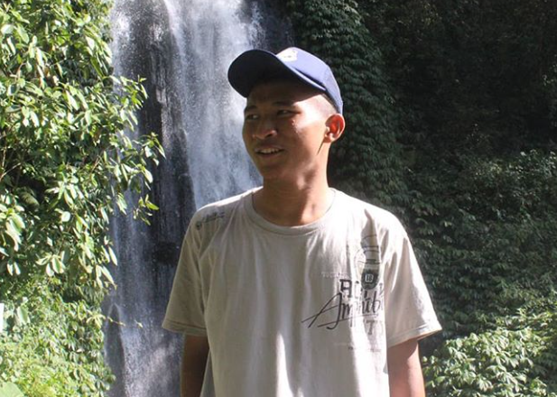
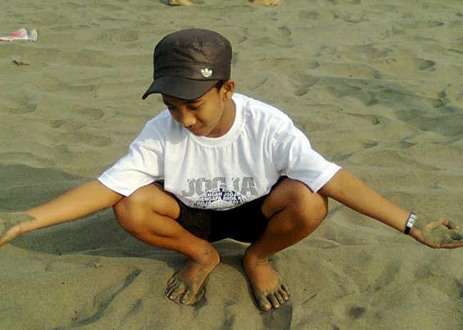

Batu Night Spectacular atau sering disebut BNS,
themepark tempat kamu bisa berwista malam hari dengan keluarga,
wahananya permainannya banyak dan bagus bagus! Dihiasi lampu lampu warna warni yang akan membuatmu betah.
Wisata ini ternyata juga dikelola oleh Jatim Park Group.
Jika tempat wisata cenderung buka dari pagi sampai sore hari,
karena BNS disinyalir memang dibuat untuk wisata malam hari, di mana lampu lampu yang gemerlapnya akan menghiasi BNS.
WAHANA BATU NIGHT SPECTACULAR
1. Drag Race
2. Circuit Go Kart
3. Laser Show
4. Games Room
5. Cafe Hantu Elite
6. Pusat Pijat Refleksi dan masih banyak lagi
ULASAN
"Lumayan untuk wisata malam,suasana enak sejuk,wahana banyak memang ada beberapa wahana yang dihilangkan tidak ada lagi, tapi lumayan nyaman untuk refresing, tapi kalau long weekend ramenya minta ampun,..."

"Sekarang wahananya tambah banyak. Makin seru. Bisa buat semua usia. Buat remaja rame2 pas banget. Daripada nganggur kalo malam mending rekreasinya kesini aja. Recommended banget..."

"Lokasi mudah dijangkau. Wahana permainan seru. Tiket terusan lebih hemat, namun ada beberapa wahana yg hanya utk anak kecil saja atau yg memicu adrenalin full atau takut masuk wahana mirip rumah hantu yg jumlahnya 4 wahana,."


ULASAN
"Lumayan untuk wisata malam,suasana enak sejuk,wahana banyak memang ada beberapa wahana yang dihilangkan tidak ada lagi, tapi lumayan nyaman untuk refresing, tapi kalau long weekend ramenya minta ampun,..."
"Sekarang wahananya tambah banyak. Makin seru. Bisa buat semua usia. Buat remaja rame2 pas banget. Daripada nganggur kalo malam mending rekreasinya kesini aja. Recommended banget..."
"Lokasi mudah dijangkau. Wahana permainan seru. Tiket terusan lebih hemat, namun ada beberapa wahana yg hanya utk anak kecil saja atau yg memicu adrenalin full atau takut masuk wahana mirip rumah hantu yg jumlahnya 4 wahana,."